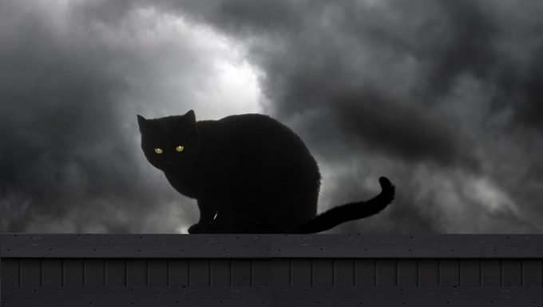
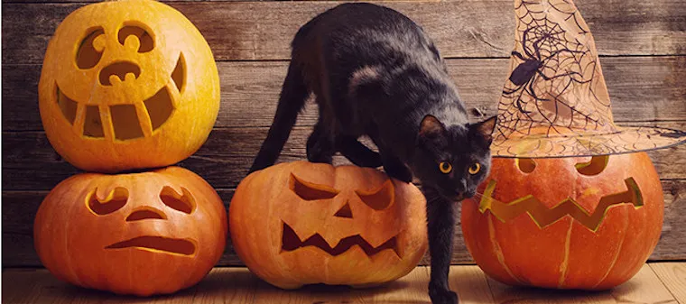

Click the right cat icon for a surprise!
Back in Ancient Egypt, cats were seen as the familiars of Gods, which brought good luck. They were also associated with Hecate, who is a goddess of witchcraft. As seen in records dated back to the 13th century, black cats were connected with Satan and witches. Each Halloween, since black cats have often been assumed to be aligned with witchcraft, death, and bad luck they have been harmed in many ways. This horrendous Halloween tradition, then changed to an everyday occurrence. Due to this assumption, these felines has been adopted or stolen for all the wrong reasons.
This organization has chosen to raise money aimed to help with the safety of black cats. In order to provide this safety, we decided to put more restrictions on the adoption of black cats. Now when someone goes to adopt these felines, there will be deeper background checks, mental evaluation, specific requirements. To keep these felines safe, we want to make sure whoever plans to adopt has not had any violent issues with animals. We hope that the money we raise will allow further black cats to avoid being wrongfully harmed.